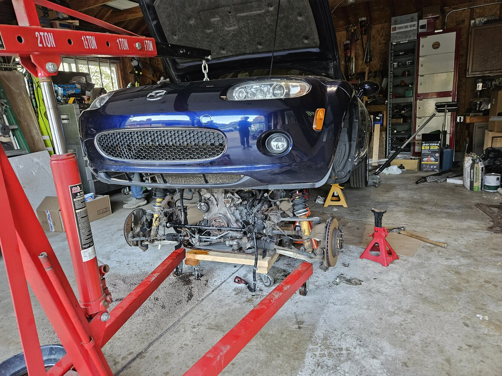
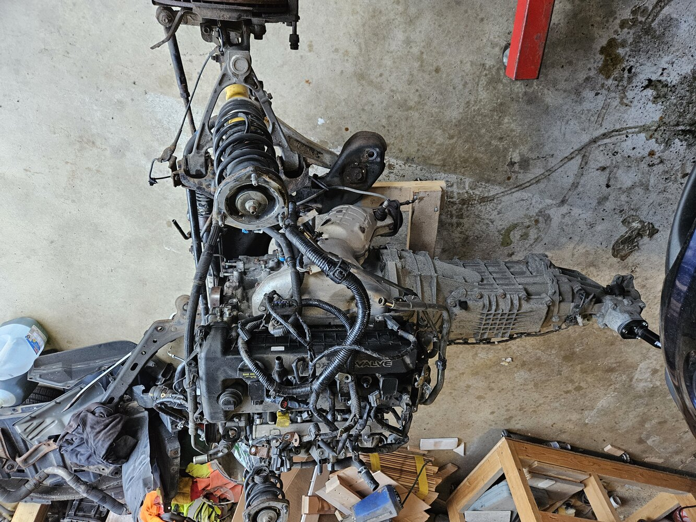
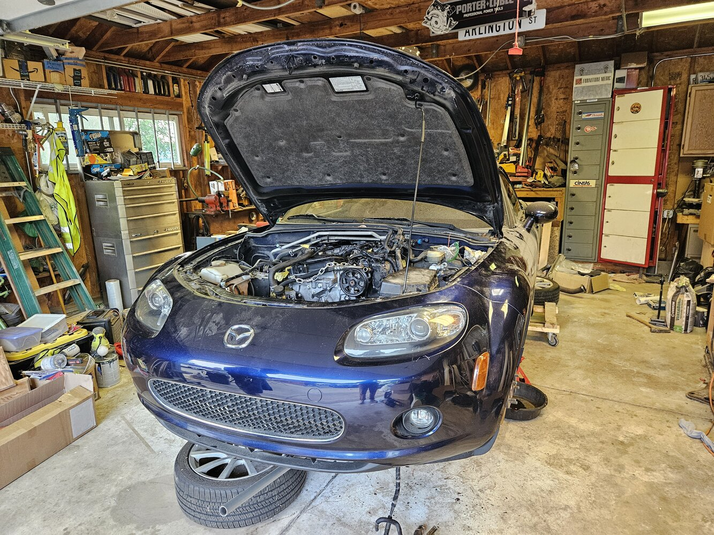
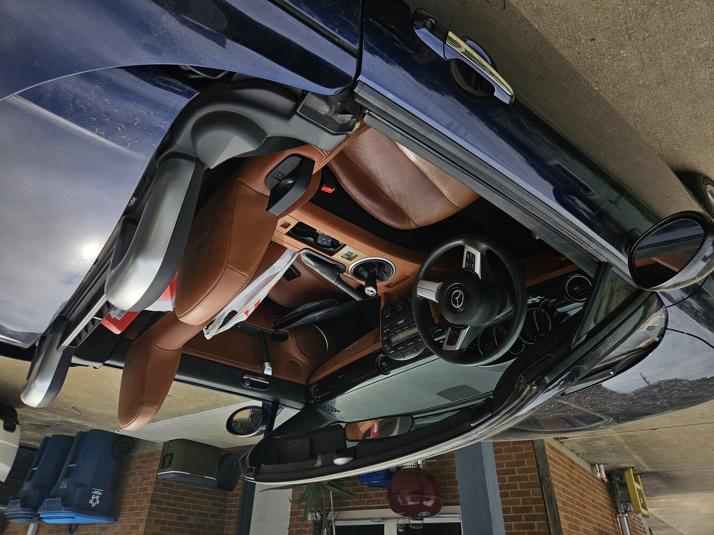
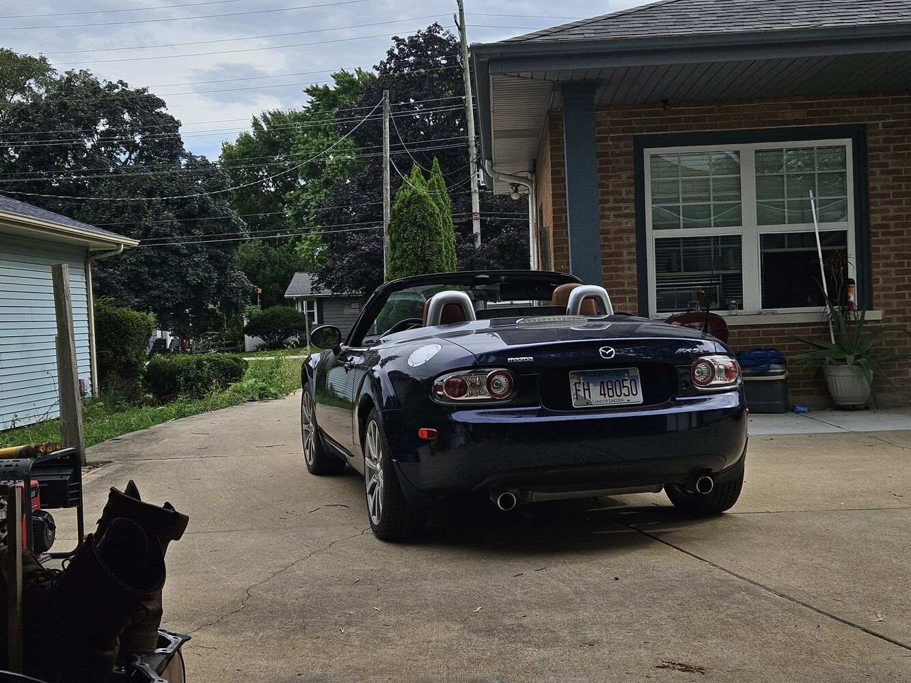

Contents
Intro
Underlines: In general, if I underline something, It's supposed to be a hyperlink. If something is underlined but has no hyperlink, that usually just means I'm planning on rambling about it at a future date, and I just left it in there to remind myself.
Superscripts: Occasionally I'll decide to back up some of my rambling with a source1, or add additional context that I feel just doesn't fit in with the rest of the surrounding text2. I'll use superscripts for this, with the relevant source or comment located at the bottom of the current block of text, but before the next image (if there is another one in the current section).
Edits: For the most part, these are living documents. There'll be a "last edited" tag on the bottom of each section. Of course, the full change log will be viewable through git commits in the repo of this website.
Rationale: I'm planning on using these pictures as an excuse to ramble about things. Or maybe my ramblings as an excuse to show pictures I took3 that I like. Mostly because I think it's a good idea to write down the things I think about a lot.
It'll help me dig at my thoughts. And force me to make them presentable. And serve as a fun exercise, since I hardly write anymore. And make me look at the pictures I took, beyond just the one time I that I take them, or instead of printing them out and leaving them everywhere.
1Example of a good source.
2Since when have superscripts been a thing?
3All images (with the exception of this
one
and this
one)
were taken by me.
Almost all images were taken using a Nikon D3200 (otherwise, my phone).
Basic 35mm Nikon lens. AF is kinda mid though, so pics might be slightly out
of focus sometimes.
Last Edited 7/14/25

Cars
FORD: Found On Road Dwerking
I recently got a 2007 Miata. Blue, with the retractable hard top, brown interior, and 6 speed manual trans. An Illinois vehicle for most of its life, the underbody is very rusty, as are the rear fender flares (to be fair, I think there was some metal-on-metal contact there at some point). The trunk gas struts were shot, the driver's side door handle lock/unlock button was gone, the passenger sun visor was cracked and limp, and its left side twin was straight up missing. The leather on the steering wheel, shifter knob, and hand brake were doing that weird thing that leather from this period of Mazda cars does where it just gets real *sticky*, especially with humidity (from, like, your hands). The clutch was cooked, the transmission oil had never been changed, and the engine was knocking.
This is actually a very common problem for the first few years of this generation Miata, where severe rod knock is caused by worn bearings that create a negative feedback loop and culminate in the engine grenading itself. So I had to replace the engine.
This thing was kind of a piece of crap.
But I got it for kind-of-a-piece-of-crap price, so ¯\_(ツ)_/¯
Anyway, this third generation Miata (the "NC") represented a huge departure from previous generations for Mazda, as it completely re-engineered the platform. All new parts, all new engine, and all new design. This was all somewhat controversial, especially because some of these changes were assumed to be pushed by Ford, which had a controlling stake in Mazda at the time.
As Mazda Vehicle Dynamics engineer Dave Coleman explains in this half-hour documentary / interview, it seems that Ford forced some consolidation across the Mazda lineup by making the Miata and the RX-8 share the same platform, implanted Ford designer Moray Callum as the chief designer for the NC, and tuned some of the dimensions and dynamics of the vehicle for a smoother ride, perhaps in an attempt to court slightly older drivers more accustomed to other American vehicles.
It should be noted that some of these changes, particularly with the suspension, were revised for the 2008 face lift [footnote].
Also, while Ford obviously had sway over these decisions, I think they get a ton of undue hate. It's an entirely new car, with a new platform, trying to compete in an environment where other small sports cars (s2000, mr2) ceased production.
Things had to change.
Lots of these changes were made with horizontal integration across the Ford portfolio in mind. Take for example, the new engine.
Under the hood of the NC Miata is a 2.0L inline four. In Mazda vehicles, this engine is called an MZR. In Ford vehicles, it's called a Duratec (sometimes even an ecoboost!). These are all actually basically the same engine, with displacements ranging from 1.8L to 2.5L, with slightly different cylinder bores and piston strokes to match. They were also widely used throughout the Mazda (mazda 3, mazda 5, mazda 6, etc.) and Ford (escape, focus, fusion, transit, ranger) lineup1. But the important part is that, aside from a few millimeters here or there, these were all essentially the same engines, and all the blocks shared the same mounting points.
1 Also some Volvos!
What this all means is that I put a used 2017 Ford Fusion engine in my Miata!
I bought the engine for like $500 with only 14k miles, pulled the old engine out, read tons of forum posts, transferred some bits over, bought some other bits from other Ford vehicles, put it all together and dropped it in.
Since everything was already out I also replaced shocks and swapped in a new clutch.
It honestly wasn't even that hard, it was mostly just annoying because I could only work on it on the weekends at my parents' garage, and there were many times when I discovered I needed a part that:
A) Was not available in any parts store nearby, and so
B) Had to be ordered online
Halting my progress and delaying work for at least another week.
Once that was all done (and once I got around to changing my transmission fluid) I finally got to enjoy it.
And holy shit do I love driving this thing.
Yeah it's a little chopped with all the rust and everything, and random stuff rattles, and it's not green, and it could really stand to lose an inch or two in height, but damn.
Sun's out, top's down, racing to make a left turn at the light before shifting down into third and *carefully* pushing into the turn juuuust until you can tell it's about to give.
And I've really warmed up to its looks, especially from behind.

(Didn't mean to get all "the city as an organism" like that one guy... forgot his name. Sorry Prof. Wilson)
Waymo is expanding like crazy, after however long of an eternity it spent being SF exclusive. It's a really good solution for the first problem - the whole "people suck" thing - since it removes people from being in control of the vehicle. And so far it's really safe, superhuman safe. Mostly since it's got tons of sensors on it that literally give it capabilities greater than those of a human.
Anyway, one of the scarier thoughts I've been having lately is that autonomous driving will truly take off.

We make our choices based on trade-offs. If a driver knows traffic is going to be atrocious, usually they choose one of the following:
> Take a different route
> Take a different mode of transport
> Not travel at all
> Body the awful drive and feel physical pain in nuts to butts traffic
Problems arise when you remove or severely diminish the cost of driving. Not the literal cost, but the "what would I rather be doing with my time right now" cost. Its easy for me to imagine a world in which everyone starts using driverless cars and now the length of the car ride doesn't nearly matter as much. Honestly, it could even be a good thing for people trying to catchup on some work before heading into the office, for people who are content scrolling for indeterminate amounts of time, or for other people still who might take a long commute in a driverless car as an opportunity to get some additional sleep.
"Well, that all sounds great! Removing the suck out of driving!" That's exactly the problem.
I fear it would just exacerbate the whole destruction-of-the-urban-fabric thing that car-centered
urban infrastructure drives. Way more people could be on the roads, just because they are fine with
much longer trip times. And, full nightmare scenario, it gets to a point where road infrastructure
has to be upgraded due to sheer demand. Why bother walking to and from a metro station when
you can just "no thoughts, head empty" command a private vehicle to take you directly from
point A to point B. At this point, why bother investing in public transit at all?
Constituents Corporations (Google/Waymo, Uber, Tesla, etc.) would not be happy to learn
that resources are going to trains or whatever instead of their potholes.
I think this all in spite of the fact that private driverless cab rides (or equivalent vehicle costs) would probably be much more expensive than an equivalent bus or train. People are rich! Suburbia is full of six-figure trucks! Beyond that, I mean just look at Uber Eats / Grub Hub / Doordash. Even people that can't afford food delivery still use it, because 20, 30, 40 dollars is just seen as the cost for the food itself, not necessarily the sum of food + private food taxi + tip + fees. There are people with Go Puff Klarna debt! I know some of them! So it becomes very easy for me to extrapolate into this nightmare scenario. Idk, perhaps I'm biased. I think I am. I hope so, anyway.

We might just get stuck with chronically underfunded public transit (worse than even now) and all the social malaise that stems from the further atomization of social interactions between random people in the urban landscape.
It just really, really feels like this next decade is our last chance at getting it right with mass transit and the urban form.
Last Edited 7/26/25

Clothes
Yeah honestly no idea with this one.
Just a random pile of clothes I found while riding bikes around campus at like 3 or 4 am.
Last Edited 7/13/25

Oranges
I never really thought about it until relatively recently, but it is kind of surprising how well citrus grows at my grandpa's house. There's multiple orange, lime, and lemon trees with branches that end up sagging under the weight of all their fruit. Kind of took it for granted, considering the surrounding terrain looks like this:

Very dusty.
To be fair, there's wet and dry seasons. During the wet season the dust kind of turns back into soil and the landscape turns somewhat green, with the transformation spurred by intermittent torrential downpours. Those stormy days are some of my favorite, mostly because it's a great excuse to do nothing. Just hang out in someone's kitchen drinking coffee. It can be a little hard to have actual conversations though, since the sound of rain smacking sheet metal roofs tends to drown everything else out!
It's gorgeous though. Streets turn into little rivers, carving out the unpaved alleys and sending their material downstream until reaching the paved roads near the busier parts of town. The paved roads in turn kinda of start looking like those unpaved alleys, with all the sand, pebbles, and rocks covering up the neat cement sections.
Anyway, those rains must replenish some sort of aquifer (or maybe the citrus trees are goated and bulk up on water), because you end up with fruits like these:

And flowers like these:

And little views like this:

All available within the internal courtyards of everyone's house.
Really wish it was better down there.
Last Edited 7/13/25

Small Towns
Driving through Illinois (off the interstate), you get to pass through tons of little towns. Lots of these little towns are pretty dilapidated, with most storefronts looking like the one in the image above. This is the thing everyone's been talking about for the past, like, 30 or 40 years. Middle America. The rust belt. Flyover country. Death, decline, despair.
A few small towns here and there look like they're doing fine, from a driver's seat point-of-view. I think these are just the ones that are near hubs, like small cities or large towns, whose residents don't face push or pull factors to the same degree as the more isolated towns further from any economic center.
And really, that's all it is. Well, "all it is" does tons of legwork here. Of course it's easy to say it's just economic push and pull factors, because anything can be a push or pull. But I guess I mean that "push and pull" is a good framework to start analyzing the deterioration of small town America. Instead of placing blame on some abstract process or entity - globalization! NAFTA! China! - one should look at specific reasons individuals may be encouraged to leave a place and go somewhere else. Hu Jintao didn't just snap his fingers and force the American ruling class to shut down World Class Sporting Goods in Smallville, Illinois.
To be fair, basically no one is saying this exactly, but the sentiment that can be extracted from all the noise around this issue kind of approximates this. Maybe instead of the Chinese Premier, it's a free trade agreement, or some international organization, or some random politician.1
Anyway, I might be biased, but these places remind me of somewhere else.
1Reading this back, the Chinese premier is definitely one of the random politicians that would get blamed lmao.

Pueblitos
It's really interesting how this exact same problem is seen across many small towns in Mexico, but I haven't seen many comparisons between the two geographies. The follwing is mostly based on anectodal experience (maybe I'll find some numbers and add those in).
My dad's village in Mexico is still fairly vibrant, but it's definitely changing. There's many small children running around during the summer, and plenty of older adults to keep an eye on them. Small corner stores remain open, serving fresh tortillas every morning. Farmers work the ejidos, ensuring the new grain depot is busy. A new clinic was just built with funding from the federal government. During the summer months and around Christmas the dance halls blast music well into the morning hours. Almost everyone now has those shiny stainless steel solar water heaters.
However, many young adults (including most of those in my family) have left. Some say it'll only be temporary. Others are more realistic with themselves and leave for good, with plans to (maybe, potentially) come back during retirement. Where are they going? The United States. What are they doing? Working.
They are earning wages and enjoying a material quality of life that easily surpasses what the vast majority of them could have attained by staying in Mexico. They are leaving an environment that many consider dangerous, spurred by factors outside of any one individual's control. Many barriers - some physical, some legal, some cultural, some interpersonal - lie between these young adults and the (real or imagined) splendor of the USA. But on average, that does little to dissuade the young.

This choice to leave, spurred mainly by economic considerations, has many downstream political, economic, and demographic effects.
Politically, well, we're kinda in the middle of it I guess. Just look around.
Economically, there's a few key things. First, the individuals that seek out lives up north enjoy materially better lives. New(ish) phones, clothes, vehicles, better medical care, a safer environment, and just much, much higher wages in general compared to what could have been obtained by staying.
Second, they provide much needed labor to the largest and most advanced global economy. Again, I should go back and include some solid data here, but the main idea is that these new workers integrate into the US economy by performing lower-skilled labor. This, in turn, effectively allows the existing population (usually with better education and training) to up-skill and perform more productive labor.
Third, they inject money into the local economy back home in Mexico. Basically everyone sends some money back to the family that remains in Mexico. This is a huge boost to families and local economies, since USD has such enormous purchasing power. A small fraction of a US worker's pay goes a long way in small-town Mexico. Effectively, this itself boosts outcomes in Mexico, as people can afford better / more goods and services.
Bascially, just a more efficient allocation of labor that benefits everyone. Also my theory that this is the reason behind the success of the American and Chinese economies. Both countries have a large pool of relatively poor rural communities (for the US nowadays, thats Mexico). Both countries have wealthy, highly advanced metropoli with highly skilled and educated workforces. And both countries have high economic migration from the poorer rural regions to the wealthy regions where lower-skilled labor is needed. This is the engine of prosperity.
Finally, this economic migration has distinct demographic effects. Primarily, the gradual depopulation of the rural towns where the migrants originate from, shifting that growth to the urban centers the migrants move to. I mean, it's kind of obvious, as this has been happening since the dawn of civilization. The growth of urban centers, that is. I don't know if rural regions have depoopulated as drastically as we're seeing now. I should check.
Anyway, this also means that the children of said migrants will grow up and live in the United States, instead of some rural village. Effectively, shifting population growth from rural towns to the wealthier, urban regions.

The(ir) kids yearn for the mines
A few things. I think it's interesting how much bandwidth is afforded to depopulating rural towns in the USA, and how many treat it as some enigma, when basically the same thing is happening south of the border, which everyone is suddenly expert on.
I think the "solution" to the rural depopulation "problem" is basically the same for both regions. The specifics might differ, but it's just a matter of making these rural regions better places to live. Have them offer more economic pull factors that do enough to keep people in. Or alternatively, increase barriers that make it much harder to migrate. The problem with the latter is that realistically, it doesn't work. This can be seen through the (now legal?) internal migration in China in spite of the Hukou system, or the large migration from Mexico to the US in spite of our migration restrictions. Even if one could raise barriers enough to stop this process, I don't think it would be good for anyone. Economic migration isn't some zero-sum process. Quite the opposite, really.
Okay, so make these rural regions better places to live. How? Well, that's the million dollar question. There have been some directed efforts by the Biden administration to encourage high-tech factories (like battery plants, semi-conductor fabs) to open up in rural regions across the USA. One of the main reasons behins this was the thought that by focusing investment in more red / rural regions, it would make it harder for republican administrations to remove the subsidies supporting these high-tech jobs if their consitutents depended on them (lmao). Some even suggest that with the advent of remote work, small towns could become attractive places for young adults due to the drastically lower cost of living. And even if American young adults still don't find these rural regions appealing, millions of immigrants would.
But the problem is that many of these small rural towns, even when offered such opportunities, are actively hostile towards them! Because batteries and solar panels and remote work and migration and any change at all is gay, I guess. Even when you have millions of people dreaming to join and contribute to the USA, whether in Los Angeles, California or Springfield, Ohio.
Small towns in Mexico don't have the luxury of complaining about industrial investment. Well, people are people, so some probably still do. But it's mainly bebcause there might not be the same interest or capacity to invest in these rural regions. Or it might not even be seen as a problem. People like my parents recognize that there is very little opportunity in these rural regions. That's the entire reason why they migrated, and why people like me are here.
People love talking about bringing back factories, bringing back steel mills, bringing back the sporting goods store, bringing back their grandchildren, bringing back whatever it is that made small-town America great. But always as some abstract place, where someone else should live and and someone else should work, engaged in the type of labor present in some imagined, non-existent, long-dead past. The(ir) kids yearn for the mines!
Last Edited 9/07/25